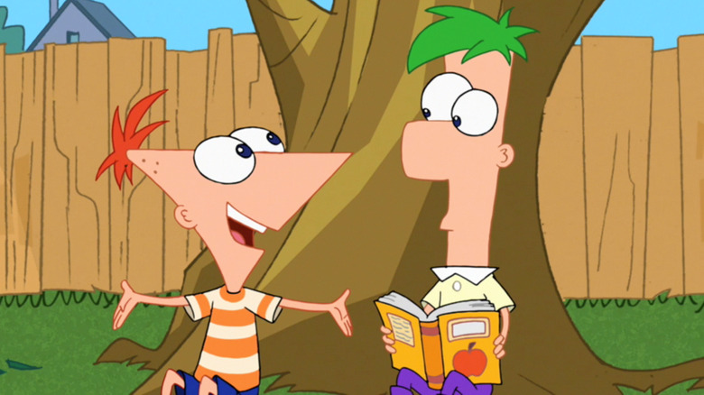

The Dichotomy of Being Both Phineas and Ferb

As a member of Gen Z, I grew up watching the cartoon Phineas and Ferb on Disney XD. The show explores
the creative siblings and their friends as they make crazy inventions to add some spice to an otherwise
boring summer. These aren't just small tinker toys one would expect a couple of tweens to make, but
instead roller coasters that reach the moon, or a snowstorm in summer to create the combination season
"swinter". Phineas and Ferb are brothers – and are both incredibly smart – however their personalities
are extremely contrasting. Phineas is outgoing, bubbly, and social. He is often the mastermind behind
their crazy ideas, with his iconic catchphrase, "Ferb, I know what we're going to do today!". Ferb,
on the other hand is quiet and reserved, oftentimes going an entire episode without ever speaking.
He will come in with a witty comeback or punchline every now and then, but he usually is the one behind
creating the blueprints or starting the actual building process.
The opposing personalities between
the brothers brings me to pose this question: am I Phineas or am I Ferb? Everyone has a Phineas in their
life; someone who's outgoing, never awkward in any social situation, and can make everyone feel welcome.
There is also a Ferb in everyone's life; they speak only when necessary, keep their thoughts to themselves,
and are overall more reserved. I feel that I am both Phineas and Ferb – I can be outgoing, but I can also
be reserved, depending on the crowd. With all this being said, allow yourself to refelct on who you identify
with more: Phineas or Ferb.
Also, if you are interested, here is a table of my three favorite Phineas and Ferb creations, along with the
corresponding season, episode number, and episode name!
| Season |
Episode |
Episode Name |
Creation |
| 1 |
11 |
"S'Winter" |
S'Winter |
| 1 |
21 |
"It's About Time!" |
Time Machine |
| 1 |
23 |
"Tree to Get Ready" |
Treehouse Robots |
Eren Jaeger is NOT Evil
Eren Jaeger is the protagonist of Attack on Titan (AOT),
a widely popular anime based on the manga written by Hajime Isayama.
After the release of the latest season, fans of the show have developed strong opinions about Eren,
many of which I oppose. In this blogpost, I’ll explain why I think Eren isn’t in the wrong.
Disclaimer: there are many anime spoilers, and you will have to have seen all released seasons
of Attack on Titan to understand what I am speaking on.
The timeline of the show progresses relatively quickly towards the end, and Eren ends up concocting
his own plan of action to attack Marley. The problem with this was that he killed thousands upon thousands
of innocent civilians during his attack, while also roping his comrades into it (and causing a devastating
casualty in the process – R.I.P. Sasha Blaus). Following these events, AOT watchers took to TikTok and began
labeling Eren as someone who committed genocide and betrayed his family (comrades). While I do not believe
Eren was particularly “in-the-right”, I believe that a big question-mark and reason for why Eren is
receiving so much hate is the fact that no one knows exactly why Eren decided to go off on his own and
cause this sort of destruction; even following the attack he refuses to tell his comrades the reason behind
his actions and this is seen as a huge betrayal to them (Sidenote: manga readers know the reason as the
manga is completed).
Now I’ll dive into why I think Eren’s motivations are not evil. Eren had been motivated to fight for freedom
ever since he watched his mother get eaten alive, and he initially vowed to kill all of the titans out
of vengeance. However, his world is flipped upside down after learning that Titans are actually humans,
and that freedom cannot be so easily attained. From here, Eren is stuck in a position where it seems
impossible to find freedom, with the only solutions being to annihilate the rest of the world, or for the
world to annihilate Paradis. I believe that Eren decided to attack Marley to make himself the world’s biggest
enemy of all, even in comparison to all of Paradis. From there, I deduced that Eren’s plan is to wreak havoc
and ultimately cause his comrades to lose all faith in him, forcing them to view him as an enemy as well.
This would force his comrades to kill him, leading them to become the heroes that the rest of the world can
thank.
To sum up, the reason Eren went off-the-rails and attacked Marley was to save the people most important to him,
the only true family he has left: his comrades. Whether this is true or not, we won’t find out until the
next season is released. Until then, I hope more AOT watchers will consider the fact that Eren may not be so
evil after all.